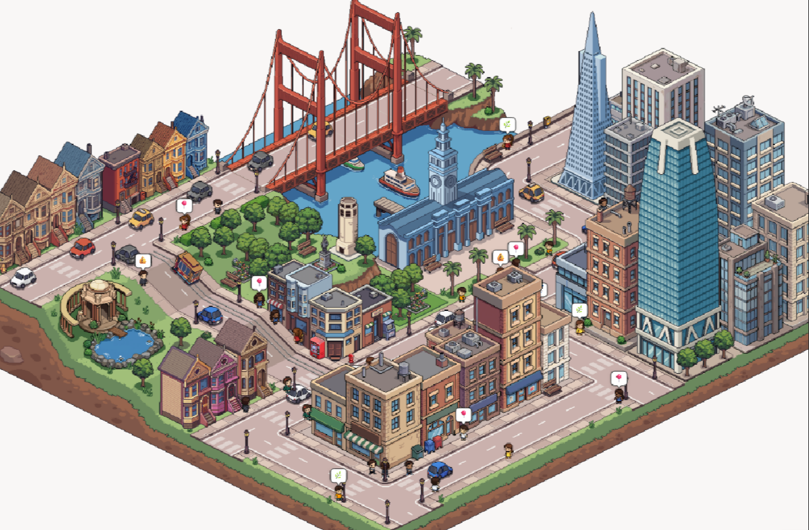

AUTORIA ESPACIAL · ISOMÉTRICO 2:1
Componha a fazenda.
Posicione ativos reais, encaixe módulos e ajuste a cena direto no mapa.
Fazenda Leiteira HorizonteDiorama compacto · seed 20261012
REFERÊNCIA ARTÍSTICA
SCENE JSON → PIXIJS 8 · CANVAS 2DDiorama Riose lado a lado
Referência urbana Simile e fazenda em miniatura, compostas com sprites reais.
REFERÊNCIASimile · cidade isométrica

RIOSEFazenda leiteira em diorama